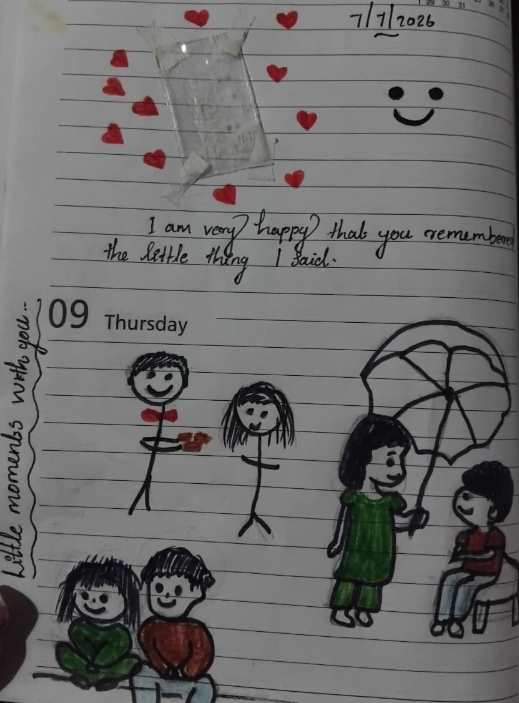
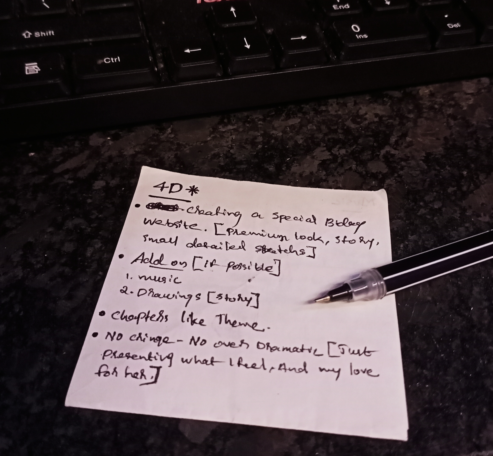
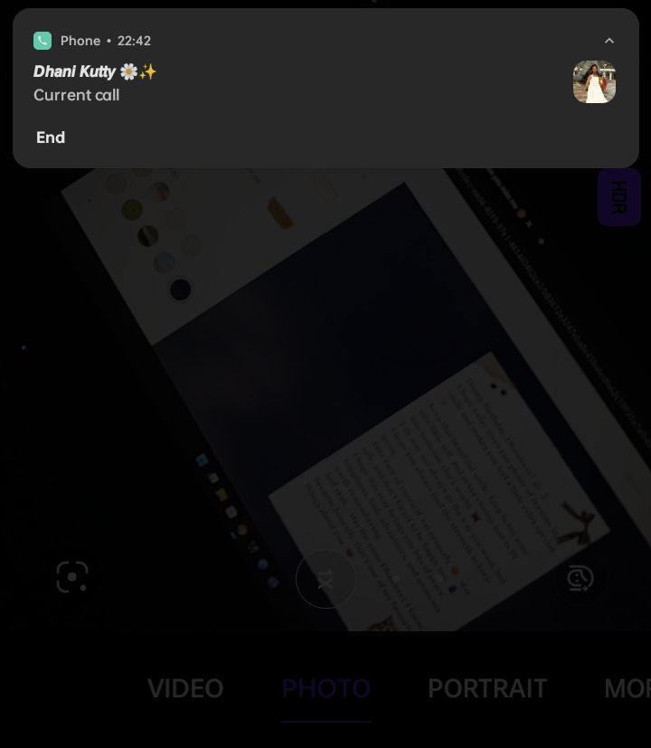
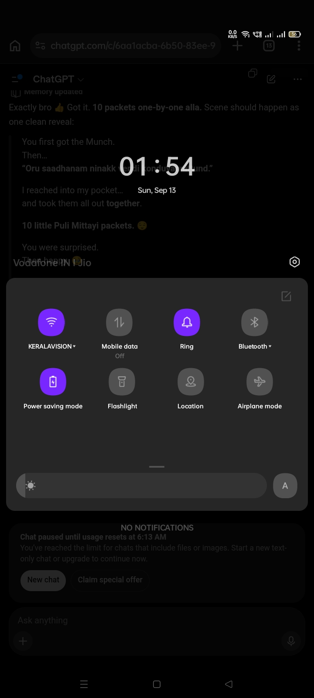
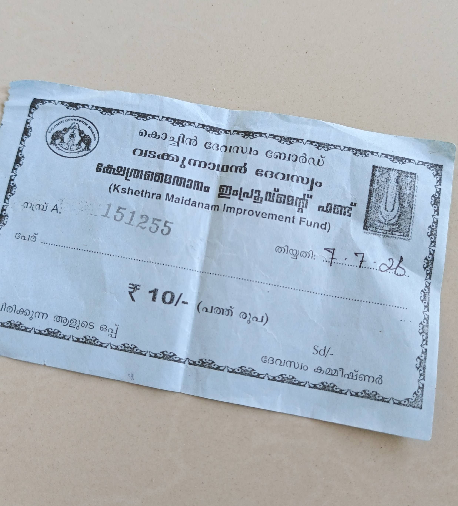

<!doctype html><html lang="en"><head><meta charset="utf-8"><meta name="viewport" content="width=device-width,initial-scale=1,viewport-fit=cover"><title>WISH007</title><style>
*{box-sizing:border-box}html{scroll-behavior:smooth}body{margin:0;background:#080808;color:#eee9df;font-family:Georgia,'Times New Roman',serif}.grain{position:fixed;inset:0;pointer-events:none;opacity:.04;z-index:20;background-image:url("data:image/svg+xml,%3Csvg xmlns='http://www.w3.org/2000/svg' width='160' height='160'%3E%3Cfilter id='n'%3E%3CfeTurbulence baseFrequency='.8' numOctaves='3'/%3E%3C/filter%3E%3Crect width='100%25' height='100%25' filter='url(%23n)'/%3E%3C/svg%3E")}.page{min-height:100svh;display:none;align-items:center;justify-content:center;padding:12vh 7vw;position:relative}.page.on{display:flex}.wrap{width:min(720px,100%);animation:in .9s ease both}@keyframes in{from{opacity:0;transform:translateY(18px)}to{opacity:1;transform:none}}.k{font:11px Arial,sans-serif;letter-spacing:.2em;text-transform:uppercase;color:#89847c}.title{font-size:clamp(44px,10vw,88px);line-height:.94;margin:18px 0 28px}.copy{font-size:clamp(18px,3vw,22px);line-height:1.65;color:#d5d0c7}.copy p{margin:0 0 18px}.btn{border:1px solid #555149;background:transparent;color:#eee9df;border-radius:99px;padding:13px 22px;font:12px Arial,sans-serif;letter-spacing:.13em;text-transform:uppercase;cursor:pointer;margin-top:18px}.btn:active{transform:scale(.98)}.chat{display:flex;flex-direction:column;gap:8px;font:14px Arial,sans-serif}.bubble{padding:11px 14px;max-width:88%;border-radius:15px;line-height:1.4}.me{align-self:flex-end;background:#17221a}.she{background:#181818;align-self:flex-start}.pass{border-top:1px solid #2c2a27;margin-top:28px;padding-top:20px}.clue{font:12px/1.7 Arial,sans-serif;color:#8e8981;margin-bottom:10px}input{width:100%;padding:14px;border:1px solid #403d38;background:#101010;color:#fff;border-radius:8px;font-size:16px}.result{min-height:24px;margin-top:12px;font:13px Arial,sans-serif;color:#d8c8a8}.story{background:radial-gradient(circle at 50% 20%,#171511,#080808 65%)}.num{font:11px Arial,sans-serif;color:#777;letter-spacing:.16em}.quote{font-size:clamp(23px,5vw,38px);line-height:1.3;margin:25px 0}.big{font-size:clamp(48px,11vw,110px);line-height:.95;margin:25px 0}.detail{border-left:1px solid #4a4640;padding-left:18px;margin:20px 0}.detail b{display:block;margin-bottom:4px}.media{display:block;width:100%;max-height:64svh;object-fit:contain;margin:25px 0;border:1px solid #272522;background:#050505}.ticket{max-width:440px;margin-left:auto;margin-right:auto}.credits{background:#050505;align-items:flex-start}.credit{min-height:65vh;text-align:center;display:flex;flex-direction:column;justify-content:center;opacity:0;transform:translateY(30px);transition:1.2s}.credit.show{opacity:1;transform:none}.date{font:10px Arial,sans-serif;letter-spacing:.2em;color:#706c65}.chead{font-size:clamp(28px,7vw,52px);margin:12px 0 18px}.ctext{font-size:18px;line-height:1.65;color:#c9c3ba}.end{text-align:center}.line{height:1px;background:#282622;margin:35px 0}.hide{display:none}@media(max-width:500px){.page{padding:10vh 21px}.copy{font-size:18px}}
</style></head><body><div class="grain"></div><div id="app"></div><script>
const A=[];function page(id,html,cls=''){A.push(`<section class="page ${cls}" id="p${id}"><div class="wrap">${html}</div></section>`)}
page(0,`<div class="k">a little conversation</div><h1 class="title">Before anything else…</h1><div class="chat"><div class="bubble me">Oii Dhaniiieeeee ✨</div><div class="bubble she">parayuuu</div><div class="bubble me">Oii Oiiii Dhaniiieeeee.... ✨💫</div><div class="bubble she">Enthada Chekka 👀</div><div class="bubble me">Ninak enthadee Undakkannieeeee</div><div class="bubble she">Ninak enthadaaa Mangadiyeee</div><div class="bubble me">Enthadee kuruppe Ninak</div><div class="bubble she">Enthadaaa ___m_____e</div></div><div class="pass"><div class="clue">10 letters<br>First letter: Capital<br>m &amp; e visible</div><input id="pw" placeholder="Type it here…"><button class="btn" onclick="unlock()">Enter</button><div class="result" id="r"></div></div>`);
page(1,`<div class="k">You probably don't remember this day the way I do.</div><h1 class="title">FIRST MEETING</h1><div class="copy"><p>But for some reason… I still remember the little things.</p></div><button class="btn" onclick="go(2)">Begin</button>`,'story');
page(2,`<div class="num">01 / THE CAR</div><div class="quote">It wasn't planned.</div><div class="copy"><p>I was going to the function on my bike. There was a car in front of me… but I had no idea where it was going.</p><p>I wasn't following it. We just happened to be going the same way.</p><p>Then suddenly… the car stopped. I was right behind it, thinking whether to honk.</p><p>The back door opened.</p><p>And there you were.</p><p><b>Red dress. Jimki.</b><br>I recognized you immediately. I smiled from the bike. You didn't notice me then.</p></div><button class="btn" onclick="go(3)">Next</button>`,'story');
page(3,`<div class="num">02 / INSIDE</div><div class="copy"><p>I parked the bike and went inside.</p><p>Nothing dramatic happened next. We didn't immediately start talking.</p><p>It was just a normal family function.</p></div><button class="btn" onclick="go(4)">Next</button>`,'story');
page(4,`<div class="num">03 / FOOD PASS</div><div class="quote">“Veruthe nokki nikkathe vannu pani edukkadee.”</div><div class="copy"><p>After everything was done, food had to be passed outside — ada, puttu, pathiri, kadala, chicken curry… and pappadam.</p><p>I was helping with Akash. You were standing there watching.</p><p>Then you smiled and joined.</p></div><button class="btn" onclick="go(5)">Next</button>`,'story');
page(5,`<div class="num">04 / TOGETHER</div><div class="copy"><p>Then maman called me to the front to fill the covered containers with puttu, pathiri and the other food.</p><p>Then I called you too.</p><p>And somehow… we ended up working together.</p><p>Nothing dramatic. Nothing planned. We were just… happy doing it together.</p></div><button class="btn" onclick="go(6)">Next</button>`,'story');
page(6,`<div class="num">05 / ONE TABLE</div><div class="quote">“Ente kunju vayaru.” 😂</div><div class="copy"><p>You were barely eating.</p><p>“Entha ithra kurach kazhikkunne?”</p><p><b>“Ente kunju vayaru.” 😂</b></p><p><b>“Lachimi ithilum kooduthal kayikumalooo.” 😂</b></p><p>Then the teasing started.</p><p>Just one of those comfortable family moments.</p></div><button class="btn" onclick="go(7)">Next</button>`,'story');
page(7,`<div class="num">06 / YOUR NAME</div><div class="copy"><p>I suddenly realized… I had forgotten your name. 😭</p><p>You remembered my name and Akash's.</p><p>“Dhanisha.”</p><p>“Ohh Dhanisha aanalle… variety name aanallo.”</p></div><div class="big">DHANISHA</div><button class="btn" onclick="go(8)">Next</button>`,'story');
page(8,`<div class="num">07 / INSTAGRAM</div><div class="copy"><p>Later, you asked about my Instagram.</p><p>The old account was gone. I had another one, but I had stopped using Instagram for a while.</p><p>You told me to follow you.</p><p>Your phone wasn't even with you that day — it was at home charging.</p><p><b>“Njan veettil chennittu follow cheyyam.”</b></p><p>And that little conversation became important later.</p></div><button class="btn" onclick="go(9)">Next</button>`,'story');
page(9,`<div class="num">08 / GOODBYE</div><div class="copy"><p>You teased me. I teased you. Then you playfully hit me on the stomach. 😂</p><p>Before leaving:</p><div class="quote">“Msg ayakkamto…”</div><p>Instagram.</p><p>That was enough.</p></div><button class="btn" onclick="go(10)">Next</button>`,'story');
page(10,`<div class="num">09 / THAT NIGHT</div><div class="copy"><p>You reached home. Sent me an Instagram follow request. I accepted.</p><p>A small number of messages. Then:</p><div class="quote">Good night.</div><p>Maybe it was just a normal day.<br>I didn't know it was the beginning of something.</p></div><button class="btn" onclick="go(11)">Chapter Two</button>`,'story');
page(11,`<div class="k">CHAPTER TWO</div><h1 class="title">THE ONLINE DAYS</h1><div class="copy"><p>After that first meeting… we didn't meet much in person. Most of what came next happened through messages.</p><p>Small conversations. Random talks. Slowly getting comfortable.</p><p>I was into workouts, health and staying active. And I kept telling you to be productive too. 😂</p><p>Then I started sending you photos and asking you to draw something on them. And you actually did. For two days. 😂</p><p>I was genuinely so happy seeing them.</p><p>Then… “Ini njan varakkilla.” “Ini onnum cheyyilla.” 😂</p><p>And just like that… my little productive project was cancelled. 😭</p></div><button class="btn" onclick="go(12)">Chapter Three</button>`,'story');
page(12,`<div class="k">CHAPTER THREE</div><h1 class="title">THE CHANGE</h1><div class="copy"><p>There was a time when I had stepped away from almost everything. Instagram. WhatsApp. Being online.</p><p>Sometimes I'd stay offline for a day or two. I was spending a lot of time alone. Thinking. Overthinking.</p><p>And then… somehow… I started coming back online.</p><p>Instagram first. Mostly because I wanted to message you. Then WhatsApp slowly became active too.</p><p>Not suddenly. Not all at once. Just slowly.</p><p>A little light came in.</p><p>Sometimes a person doesn't change your whole life. Sometimes… they just make it feel a little less dark.</p></div><button class="btn" onclick="go(13)">Chapter Four</button>`,'story');
page(13,`<div class="k">CHAPTER FOUR</div><h1 class="title">THE 16-YEAR-OLD LIE 😂</h1><div class="copy"><p>Okay… now comes the investigation. 🕵️😂</p><p>During one of our Instagram chats, I casually asked you: <b>“Ethra vayassayi?”</b></p><p>And you simply said… <b>“16.”</b> 😌</p><p>I wasn't asking for any special reason. Just wanted to know your age. Then you asked mine.</p><p><b>“21.”</b><br>“Okay.” 😂</p><p>Later, while we were talking about family and people we knew, you mentioned your <i>chechi</i> — the relative I already knew — and said that you two were the same age.</p><p>Then, about two days later, I brought it up again.</p><div class="quote">“Ninakku 16 vayassalle?”<br>“Ninakku 16 vayassu thanne alle?”</div><p>And you were still confidently going with it. 😌😂</p><h3>THEN THE MATH STARTED</h3><p>You had already completed your degree and were waiting to write two improvement exams. A normal three-year degree journey didn't exactly match being 16. 😂</p><p>Then there was Akash too. He was already 17+ / nearing 18, and you had previously made it sound like you were younger than him.</p><p>One thing after another… the story started contradicting itself. 😭</p><h3>CAUGHT. KAIYODE. 😂</h3><p>So I finally put all those little details together.</p><div class="quote">“Sheriya, enikku 16 vayassalla… enikku 20 vayassaanu.”</div><div class="big">CASE CLOSED 😂</div><p>Honestly… the funniest part wasn't even the lie. It was how confidently you kept the story going before finally getting caught. 😂</p></div><button class="btn" onclick="go(14)">Next</button>`,'story');
page(14,`<div class="k">CHAPTER FIVE</div><h1 class="title">SOMEWHERE IN BETWEEN</h1><div class="copy"><p>One random 👀 emoji… somehow became a nickname.</p><div class="big">UNDAKANNY</div><p>And your nickname for me?</p><div class="big">VAALMAKRI</div><p>Some nicknames are random. Some just stay.</p><p>Somewhere along the way, we started talking about the future too. What kind of person each of us wanted.</p><p>Understanding. Love. Care. Family.</p><p>Different words maybe. But somehow… the same vibe.</p><p>And yes… I still had one very important responsibility. 😂 Making sure you eat properly. Sometimes you didn't eat enough. Sometimes you didn't eat on time. And I'd irritate you about it. Not because I wanted to annoy you. Just because… I cared.</p></div><button class="btn" onclick="go(15)">Next</button>`,'story');
page(15,`<div class="k">CHAPTER SIX 🫂🎶</div><h1 class="title">FIVE SONGS</h1><div class="copy"><p>There was one day… songs became more than just songs.</p><p>A call. A guessing-game kind of moment.</p><p>Then another day… you sang for me.</p><p>Not one song. Not two.</p><div class="big">FIVE.</div><p>Hearing you sing in your own voice… that was something else.</p><p>I'll remember that one. 🫂</p></div><button class="btn" onclick="go(16)">Next</button>`,'story');
page(16,`<div class="k">CHAPTER SEVEN</div><h1 class="title">THE IGNORE</h1><div class="copy"><p>Work pressure was already getting to me. While I was messaging you, you were watching reels.</p><div class="quote">“Nee reels nokki irunno… njan povaan.”</div><p>Then you said:</p><p>“Pokko.”<br>“Aarum aareyum pidich nirthanilla.”<br>“Povandavark pokaam.”</p><p>Next day came the voice message.</p><div class="detail"><b>“Njan dheshyapett pokko ennoke paranj kayinjit, pinne nee poyilee, appo enik bad aayi, entho enik sankadam aayi, kanneen vellam vannu. Pinne korach kayinjappo, Njan enth thengakaa karayaneen chinthichuu, Ennit reels kand irunnu.”</b></div><p>She cried. We talked. Apologized. Voice messages. Calls. Everything settled.</p><p>I was working in Kottayam for a few days. Then I came home.</p><p>And exactly that day… you were coming to town for admission.</p></div><button class="btn" onclick="go(17)">07 JULY 2026</button>`,'story');
page(17,`<div class="k">CHAPTER EIGHT / 07 JULY 2026</div><h1 class="title">THE SECOND MEETING</h1><div class="copy"><p>You unexpectedly asked if I was coming to town.</p><p>I immediately got ready, even without eating, and rode my bike to meet you.</p><p>On the way I bought Puli Mittayi because you had told me you liked it. Then I learned your friend would also be there, so I bought two Munch bars.</p><p>We met at Vadakkunnathan Temple ground. Six of us were there.</p><p>I was shy at first, but somehow it felt comfortable.</p></div><button class="btn" onclick="go(18)">Her that day</button>`,'story');
page(18,`<div class="k">HER THAT DAY 💚</div><div class="detail"><b>GREEN DRESS</b><span>Same design. Just green.</span></div><div class="detail"><b>JIMKI</b><span>The same one.</span></div><div class="detail"><b>SMALL BLACK DOT POTTU</b></div><div class="detail"><b>SHORT KURI</b></div><div class="detail"><b>SOFTLY FLOWING HAIR</b></div><div class="detail"><b>SILVER BRACELET-LIKE WATCH</b></div><div class="copy"><p>And somehow, I noticed all those little details again.</p><p>Maybe because I was actually paying attention.</p></div><button class="btn" onclick="go(19)">One small surprise</button>`,'story');
page(19,`<div class="num">PULIMITTAYI</div><div class="copy"><p>You first got the Munch.</p><div class="quote">“Oru saadhanam ninakk vendi konduvannittund.”</div><p>I reached into my pocket… and took them all out together.</p><p><b>Ten little packets.</b></p><p>Because you had once told me you liked them.</p><p>I remembered.</p><p>One small thing. But it felt special.</p></div><button class="btn" onclick="go(20)">Two days later</button>`,'story');
page(20,`<div class="num">11 JULY 2026 / DRAWING</div><div class="copy"><p>Two days later, during a call… you sent me a little drawing.</p><p>Something from that day.</p><p>You had remembered it. And turned it into something of your own.</p><p>Another tiny memory.</p></div><button class="btn" onclick="go(21)">Chapter Nine</button>`,'story');
page(21,`<div class="k">CHAPTER NINE</div><h1 class="title">LITTLE THINGS</h1><div class="copy"><p>Some pictures just make you stop for a second. 🤍</p><p>And yeah… I really like you in saree. 😌</p><p>Some pictures just stay with you.</p><p>You sent me this video…</p></div><video class="media" src="crushmom.mp4" muted playsinline controls></video><div class="quote">And honestly?<br><b>Enik ninne onnude crush adichu. 😌</b><br>I even told you that. 😂</div><button class="btn" onclick="go(22)">Continue</button>`,'story');
page(22,`<div class="k">THE UNEXPECTED PART ❤️</div><div class="copy"><p>I never really planned for you to become such an important part of my life.</p><p>You just happened.</p><p>Somewhere between all the conversations, the little fights, the silly moments, the laughs, and everything in between… we became us.</p><p>And honestly… I don't feel like letting that bond go.</p><p>You're one of those unexpected things life brought to me. Something I never went looking for… but somehow became one of my favourite parts of it.</p><p>You made me understand little things about love, care, giving, and simply being there for someone.</p><p>Not through big words. Just through the little things.</p><p>I don't know exactly what the future holds.</p><div class="quote"><b>But I know one thing…<br>I'm really glad you happened.</b></div></div><button class="btn" onclick="go(23)">Final wish</button>`,'story');
page(23,`<div class="k">FOR YOU</div><h1 class="title">A LITTLE WISH</h1><div class="copy"><p>After everything I wanted to tell you… there's just one thing I want for you.</p><div class="quote"><b>Be happy.<br>Be safe.</b> 🌼🦋🫂✨</div><p>I know you can't be happy all the time. Life won't always be easy, and some days will feel heavier than others.</p><p>But whenever you can… <b>try to choose happiness.</b> Try to smile. Keep going.</p><p>And whenever you feel like you can't handle something alone—<b>feel free.</b></p><p>I'm always here for you.</p><p>I love what you are. So don't ever feel like you have to become someone else to be enough.</p><p><b>Keep going, my love.</b><br><b>Everything will be fine. ❤️</b></p><p><b>Happy Birthday, Dhanieeee. 🎂🌼</b></p><p>I'm really glad you happened to me.</p></div><button class="btn" onclick="go(24)">One small sorry</button>`,'story');
page(24,`<div class="copy"><div class="quote"><b>And one small sorry… for being a little late with this. 🫂</b></div><p>I started putting this together on <b>9 September</b>, and somehow it took until <b>16 September</b> to finally bring everything together.</p><p>It may be late… but every bit of it was made with you in mind. ❤️</p></div><button class="btn" onclick="go(25)">End credits</button>`,'story');
page(25,`<div class="credit"><div class="date">09 SEP 2026</div><div class="chead">THE IDEA 💡</div><div class="ctext">It started with one simple thought…<br><b>What if I made something different for her?</b></div></div><div class="credit"><div class="date">09 SEP 2026</div><div class="chead">THE FIRST VERSION</div><div class="ctext">The first little version was ready.<br>It wasn't perfect… but it gave me an idea of what this could become.</div></div><div class="credit"><div class="date">10 SEP 2026</div><div class="chead">MAKE IT SOMETHING MORE</div><div class="ctext">The demo was only the beginning.<br>Then I started thinking…<br><i>How can I make this more personal?</i><br><i>What can make it different?</i><br><i>What little things can make it feel like ours?</i></div></div><div class="credit"><div class="date">10–12 SEP 2026</div><div class="chead">BUILDING IT, STEP BY STEP</div><div class="ctext"><b>WHERE IT ALL STARTED</b><br><br>The first step was turning the idea in my head into something I could actually build.<br><br><b>BUILDING THE CHAPTERS</b><br><br>The memories needed a story of their own. So I started putting them together, one chapter at a time.<br><br><b>THE DETAILS THAT MAKE IT DIFFERENT</b><br><br>The little things that weren't necessary, but somehow felt necessary.<br><br><b>SOUNDTRACKING THE MEMORIES</b><br><br>Every moment needed the right feeling.<br><br><b>WHAT SHOULD GO IN?</b><br><br>Photos, memories, little moments… deciding what belonged inside this story took time too.<br><br><b>THE LITTLE SECRET</b><br><br>Even the beginning needed a little mystery. 👀</div></div><div class="credit"><div class="date">11 SEP 2026</div><div class="chead">TIME WAS RUNNING OUT</div><div class="ctext">Somewhere along the way, I realized… I wasn't going to finish everything before your birthday.<br><br>So I made something simple for the moment.<br><br>A small birthday card.<br>Just so I could still give you something on time.</div></div><div class="credit"><div class="chead">AND YOU DIDN'T EVEN KNOW</div><div class="ctext">And while I was making it… you were right there on a call with me. 😂<br>You had no idea what I was actually working on.</div></div><div class="credit"><div class="date">13 SEP 2026</div><div class="chead">STILL WORKING…</div><div class="ctext">This picture is from one of those late nights.<br><br>But honestly… this wasn't just one night.<br><br>It had already been a few days of planning, changing things, trying again, and putting everything together.<br><br>And there were plenty of nights that looked something like this.</div></div><div class="credit"><div class="chead">THE PART THAT MATTERED</div><div class="ctext">And through all of this…<br><br><b>I never wanted this to become a reason to ignore you.</b><br><br>Making this was something I wanted to do <b>for you</b>.<br>Not something that meant I had to disappear from you.<br><br>The website was the project.<br><br><b>You were always the reason behind it.</b></div></div><div class="credit"><div class="chead">JUST A LITTLE PIECE OF THAT DAY. 🎫</div><div class="ctext">I know… it's not really a big thing.<br>But I still kept it.<br>Maybe because it belonged to a day I wanted to remember.</div></div><div class="credit"><div class="chead">Okay… enough serious cinema. 😂</div><video class="media" src="bday bmb.mp4" muted playsinline controls></video><div class="ctext"><b>Yeah… this felt more like us. 😂</b></div></div><div class="credit end"><div class="chead">THE END</div><div class="ctext">And that's how this little idea became something I really wanted you to see.</div><div class="line"></div><div class="date">PAUSE.</div></div>`,'credits');
document.getElementById('app').innerHTML=A.join('');
function go(n){document.querySelectorAll('.page').forEach(x=>x.classList.remove('on'));document.getElementById('p'+n).classList.add('on');scrollTo({top:0,behavior:'smooth'});if(n===25)credits()}
function unlock(){const v=document.getElementById('pw').value.trim(),r=document.getElementById('r');if(v==='Valmakriye'){r.textContent='Ambadeee, kand pidich aval Undakanny 😌✨';setTimeout(()=>go(1),900)}else r.textContent='Nannayindadeee Undakanny 😌 Noki adikadee 👀'}
document.addEventListener('keydown',e=>{if(e.key==='Enter'&&document.activeElement.id==='pw')unlock()});
function credits(){document.querySelectorAll('.credit').forEach((x,i)=>setTimeout(()=>x.classList.add('show'),i*420))}
document.getElementById("p0").classList.add("on");</script></body></html>
